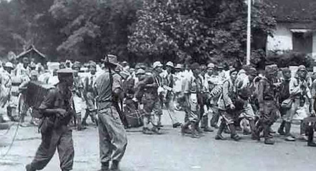

PERTEMPURAN MEDAN AREA
Pada tanggal 9 Oktober 1945, dibawah pimpinan T.E.D Kelly. Pendaratan tentara sekutu (Inggris) ini diikuti oleh pasukan sekutu dan NICA yang dipersiapkan untuk mengambil alih pemerintahan. Kedatangan tentara sekutu dan NICA ternyata memancing berbagai insiden terjadi di Hotel yang terletak di Jalan Bali, Kota Medan, Sumatera Utara pada tanggal 13 Oktober 1945.
Saat itu, seorang penghuni merampas dan menginjak-injak lencana merah putih yang dipakai pemuda Indonesia. Hal ini mengundang kemarahan pemuda Indonesia. Pada tanggal 13 Oktober 1945, barisan pemuda dan TKR bertempur melawan Sekutu dan NICA dalam upaya merebut dan mengambil alih gedung-gedung pemerintahan dari tangan Jepang.
Inggris mengeluarkan ultimatum kepada bangsa Indonesia agar menyerahkan senjata kepada Sekutu. Ultimatum ini tidak pernah dihiraukan. Pada tanggal 1 Desember 1945, Sekutu memasang papan yang tertuliskan "Fixed Boundaries Medan Area" (batas resmi wilayah Medan) di berbagai pinggiran kota Medan. Tindakan Sekutu itu merupakan tantangan bagi para pemuda.
PERTEMPURAN
Pada tanggal 10 Desember 1945, Sekutu dan NICA melancarkan serangan besar-besaran terhadap Kota Medan. Serangan ini menimbulkan banyak korban di kedua belah pihak. Pada bulan April 1946, Sekutu berhasil menduduki Kota Medan. Untuk sementara waktu pusat perjuangan rakyat Medan kemudian dipindahkan ke Siantar, sementara itu perlawanan para laskar pemuda dipindahkan keluar Kota Medan. Perlawanan terhadap sekutu semakin sengit pada tanggal 10 Agustus 1946 di Tebing Tinggi.
Kemudian diadakanlah pertemuan di antara para Komandan pasukan yang berjuang di Medan Area dan memutuskan dibentuk nya satu komando yang bernama Komando Resimen Laskar Rakyat untuk memperkuat perlawanan di Kota Medan. Setelah pertemuan para komando itu, pada tanggal 19 Agustus 1946 di Kabanjahe telah terbentuk Barisan Pemuda Indonesia (BPI) dan berganti nama menjadi Komando Resimen Laskar Rakyat cabang Tanah Karo, dipimpin oleh Matang Sitepu sebagai ketua umum, dan dibantu oleh Tama Ginting, Payung Bangun, Selamat Ginting, Rakutta Sembiring, R.M. Pandia dari N.V Mas Persada Koran Karo-karo dan Keterangan Sebayang.
Di dalam Barisan Laskar Rakyat ini semua potensi pimpinan pemuda dengan berisan-barisan perjuangannya dirangkul dan digabung ke dalam Barisan Pemuda Indonesia termasuk bekas Gyugun atau Heiho seperti: Djamin Ginting, Nelang Sembiring, Bom Ginting. Sedangkan yang berasal dari Talapeta: Payung Bangun, Gandil Bangun, Meriam Ginting, Tampe Malem Sinulingga. Sedangkan yang berasal dari N.V. Mas Persada: Koran Karo-karo. Yang berasal dari Pusera Medan: Selamat Ginting, Rakutta Sembiring dan Tampak Sebayang. Demikian pula dari potensi-potensi pemuda lain seperti: Tama Ginting, Matang Sitepu.
 HOMEuntuk kembali ke home
HOMEuntuk kembali ke home